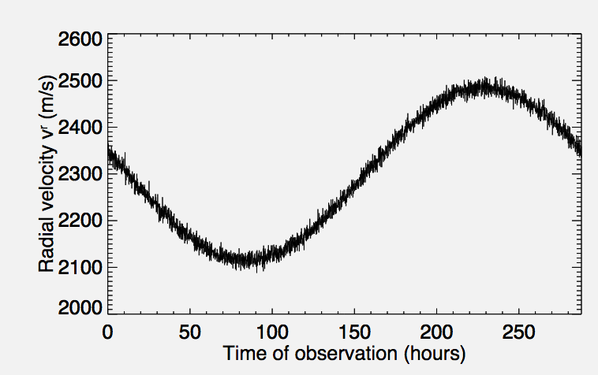
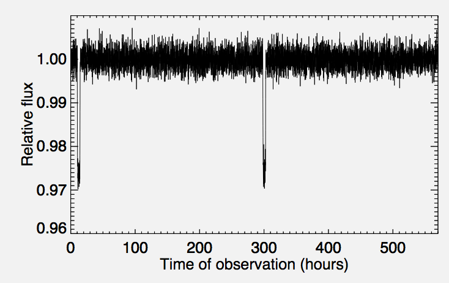
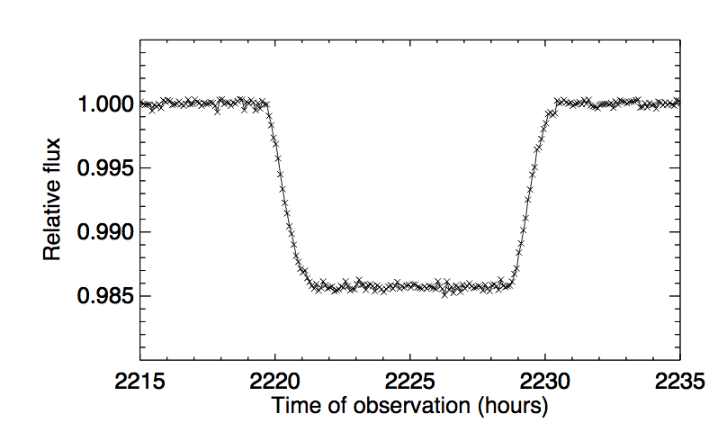

Du må bruke presentasjonsmodus/fullskjermsvisning for å lese denne, men du skal ikke bruke frem/tilbake-knappene, KUN knappene som dukker opp på sliden for å ta deg videre! Ofte må du laste filen ned til maskinen din og åpne den der for å få til dette. Merk at noen knapper vil åpne nettskjema, videoer eller andre ressurser i internettbrowseren din. Når du gjør det riktig, skal du kun se en side av gangen, og når du trykker på knappene som dukker opp på skjermen så skal disse ta deg frem/tilbake i dokumentet. Du vil miste mye læringsutbytte hvis du ser flere slides av gangen. Får du det ikke til, spør foreleser/gruppelærer!
Dette er en erstatning for forelesningen i emnet. Har du gått skikkelig gjennom disse interaktive forelesningsnotatene så trenger du ikke å lese de fulle forelesningsnotatene (med unntak av oppgavene bak). All informasjonen du trenger, får du her. Du kommer til å få mange grublespørsmål og diskusjonsoppgaver, det er meningen at disse skal gjøres i grupper av minst 2, maks 4 studenter. Det er defor sterkt anbefalt at dere sitter sammen i grupper når dere går gjennom disse interaktive forelesningsnotatene, du vil få betydelig mer utbytte av dem på den måten. En god ide kan være å bli enige om å treffes til den faste forelesningstiden og bruke forelesningslokalet som kommer til å være resevert til dette. Hvis du har kommentarer ris/ros til disse forelesningsnotatene eller til emnet, trykk på 🙂 🙁 knappen som du finner på alle sider.
Forrige side
Velkommen til del 1C! I denne delen skal vi ta det du har lært om celestmekanikk litt videre. Vi skal bruke det du kan om planetbaner til å se på planeter i bane rundt fjerne stjerner. Vi skal se hvordan du kan observere disse planetene indirekte gjennom å se på stjernen. Her skal vi bruke litt av statistikken fra del 1A til å finne ut hvordan analysere data med støy (og ekte data har alltid støy). Er du klar? Neste side
Forrige side🙂 🙁Introduksjon


Innleveringsppgave 1C4 går ut på å bruke stjerneobservasjoner (som i figurene) til å finne ut av planetens egenskaper.
Bl.a. kan du finne størrelse, masse og sammensetningen av en planet i bane rundt en fjern stjerne, uten å noengang se planeten direkte. Til dette trenger vi å bruke en del av det som du lærte i de forrige forelesningene samt at du trenger å lære litt om analyse av data. Men før vi setter igang så skal vi varme opp litt med å fort sjekke at vi har kunnskapen fra del 1A og 1B på plass, samt se hva du allerede kan om temaene i del 1C. Trykk her for å varme opp
Er du klar og har sendt inn skjemaet? NeiJa
Forrige side🙂 🙁Vinkeloppløsning I figuren ser du en observatør som kikker på en stjerne og en planet (observatøren ser faktisk ut til å ha funnet et stjerne-planet system som likner på sola og jorda). Avstanden til systemet er r og avstanden mellom stjerne og planet er Δr. Vinkelen mellom de to objektene er θ. I dette emnet skal vi ofte bruke liten-vinkel-formelen: Δr ≈ rθ der θ må være i radianer! Dette er en svært god tilnærming for store avstander r og små vinkler θ noe vi nesten alltid har i astrofysikken. Denne sammenhengen bør du lære deg med en gang og huske, eller alternativt, hvis du kan utlede den så er det veldig fort gjort å komme frem til den uten å måtte pugge. Kan du se hvordan den kan utledes? Neste side
Forrige side🙂 🙁Vinkeloppløsning
Altså Δr ≈ rθ Har du innsett hvordan formelen utledes? Hvis ikke, her er et par hint:
Kan du lage noe som er tilnærmet en rettvinklet trekant her? (dette er en mulig måte å tenke på)
Avstanden Δr er veldig liten (dette er en annen mulig måte å tenke på)
Vinkelen θ er veldig liten!
Hva kan man gjøre når man skal gjøre tilnærminger med veldig små størrelser?
Hvis θ er veldig liten, så har trekanten tilnærmet 90∘ på begge de gjenværende vinklene. Da kan vi anta at en av dem er nøyaktig 90∘ og at vi dermed har en rettvinkelt trekant. Hvis θ er liten kan vi også anta at begge de andre sidene har lengden r. Da har vi: Δr = rsin θ ≈ rθ fordi rekkeutviklingen i θ er $\sin{\theta}\approx \theta - \frac{1}{6}\theta^3+O(\theta^5)$. Til første orden blir det kun θ.
En annen måte å tenke på er den samme vi brukte for å finne tangensialhastighet i 1B. Buen Δs og avstanden Δr blir omtrent den samme når denne avstanden er veldig liten (en bitteliten del av av bue blir omtrent som en rett lite linjestykke): Δr ≈ Δs = rθ Hvis du ikke husker resonnementet fra 1B, ta gjerne en titt på denne videoen igjen. Neste side
Forrige side🙂 🙁Vinkeloppløsning Når et teleskop observerer et objekt på himmelen, blir dette objektet ’smørt utover’ pga. optikken samt forstyrrelser i atmosfæren. Dette gjør at et veldig lite punkt blir til en stor skive (se bildet). Når to objekter kommer for nær hverandre, vil de til slutt se ut som et enkelt objekt.
Oppløsningsevnen til et teleskop avgjør hvor nær objektene kan være før man ikke lenger kan skille de fra hverandre som to separate objekter.Vinkeloppløsningen (angular resolution) angies som den minste vinkelen som disse objektene kan være fra hverandre for å kunne skille de. Vinkelen det snakkes om her er vinkelen θ på de foregåede sidene.Når astronomer jobber med bilder av stjernehimmelen så er det vanlig å betegne avstanden mellom to objekter på bildet med angulæravstanden som igjen er den samme vinkelen definert i figuren på de foregående sidene.Neste side
Fra bakken er det en grensen for den beste mulige oppløsningsevnen ved perfekte værforhold (minimal fuktighet i lufta) på θ = 0.4″. Vinkler i astronomien blir ofte regnet i bueminutter ′ ($\frac{1}{60}$ grad) og buesekunder ″ ($\frac{1}{60}$ bueminutt). Kan du se hvordan vi kan regne om fre bueminutter og buesekunder til grader og radier?Gjør deg trygg på dette med en gang, du kommer til å få mye bruk for dette i hele resten av kurset!. Grunnen til denne grensen på 0.4″ kommer av atmosfæriske forstyrrelser. For bedre oppløsning kan man bruke romteleskop som Hubble Space Telescope (HST) med en oppløsningsevne på rundt 0.1″. Fra bakken finnes det nå også tekniske løsninger for å overkomme grensen på 0.4″. Ved å bruke adaptiv optikk, les mer her i Store Norske Leksikon, med en laserstråle for å modellere de atmosfæriske forstyrrelsene og på den måten deformerer man speilet i teleskopet til å korrigere for dette. Dermed kan man ved gode værforhold konkurrere med HST i oppløsningsevne også fra bakken.Neste side
Forrige side🙂 🙁Vinkeloppløsning
Anta at stjerna i figuren er Sirius i en avstand av 8.6 ly (light year = lysår, avstanden lyset tilbakelegger i løpet av et år). Hvis Sirius hadde en planet i bane rundt seg. Hva er den minste avstanden Δr (på bildet) denne planeten kunne hatt fra Sirius for at man skulle kunne skille planeten fra stjerna i et teleskop fra bakken med oppløsning 0.4″? (hint: liten-vinkel-formel). Angi svaret i astronomiske enheter (AU). Og hva hvis man brukte HST med oppløsningsevne 0.1″ isteden?
Ikke gå videre før du har regnet ut svaret og har tenkt litt gjennom hva svaret betyr. Merk at Sirius er en av våre aller nærmeste stjerner, de fleste er lenger unna. Kan du nå forklare hvorfor så få ekstrasolare planeter har blitt avbildet? Neste side
Ble avstanden større eller mindre enn 1 AU? (avstanden sol-jord)
Ville du kunne avbilde en planet i avstand 1AU fra en av våre nærmeste stjerner? Hva med en planet i samme avstand som Jupiter i vårt solsystem? Ikke gå videre før du har svaret!
Forrige side🙂 🙁Radiell-hastighetsmetoden
Hvis du ikke helt fikk grepet på spørsmålene på forrige side, spør gruppelærer eller foreleser!.
I figuren ser du spektret av synlig lys. Helt til venstre er rød med bølgelgenden fra λ = 600nm til fiolett på høyreside ned til bølgelende λ = 450nm. (merk størst λ til venstre) Vi ser spektret tatt av en stjerne over 6 dager. Den mørke linjen er en absorpsjonsline, lys som blir tatt opp i atmosfæren til stjernen selv. Vi ser at posisjonen til absorpsjonslinjen endrer seg fra rød til oransje og tilbake mot rød. Dvs. bølgelengden som absorpsjonsliner er på endrer seg.
Det at spektrallinjen går frem og tilbake (λ for linjen blir større og mindre) med tiden er et typisk tegn på at stjerna har en planet i bane rundt seg. Kan du tenke deg hvorfor det er slik?Neste side
Du får ikke helt svaret enda. Her kommer litt mer info:
Her ser vi bølgelengden til absorpsjonslinja Hα, en typisk linje for hydrogenatomet, målt fra en stjerne. I laboratoriet så måler man bølgelengden til Hα til å være 656.28nm.Men i spektret fra denne stjernen så endrer bølgelengden for spektrallinjen seg frem og tilbake slik som vi så på forrige side slik at den ikke er på nøyktig 656.28nm som i laboratoriet. X-aksen i figuren viser tidspunktet for observasjon, y-aksen viser avviket i bølgelengde fra 656.28nm. Vi ser at den er veldig nær 656.28nm, men ikke helt på, den har små avvik frem og tilbake som følger en sinus-kurve. Hjelper dette deg med å forstå hvorfor denne stjerna kan ha en planet i bane rundt seg? Tenk deg nøye om før du går til neste side! Hint: Hva kan få bølgelengden til lys til å endre seg? Neste side
Forrige side🙂 🙁Radiell-hastighetsmetoden Et lite hint til før du går videre... ... Dopplereffekten!
Husker du hva den går ut på???
Husker du formelen for endring i bølgelengde pga. Dopplereffekten?Trykk her når du har tenkt...
$$\frac{\Delta\lambda}{\lambda}=\frac{v}{c}$$ Hvis du trenger en oppfrisking av Dopplereffekten, se på denne linken fra SNL. Formelen gir oss endringen Δλ i bølgelengden for lys som opprinnelig har bølgelengde λ, når lyskilden har hastighet v. Lysfarten er gitt ved c. Lyset som blir sendt ut fra stjernen med bølgelengde λ, vil for oss ha bølgelengden λ + Δλ hvis stjerna har hastigheten v i forhold til oss.Det samme gjelder dermed for bølgelengden til spektrallinja.Neste side
Forrige side🙂 🙁Radiell-hastighetsmetoden Nå ser du kanskje at denne endringen av bølgelengden til spektrallinja betyr at stjerna beveger seg i forhold til oss?
For å videre undersøke hvordan stjerna beveger seg, trenger vi å ’oversette’ figuren med bølgelengdeendringer til stjernehastigheter. For å gjøre det må vi bli enige om en konvensjon som vi skal bruke i hele resten av dette kurset, så følg nøye med:
Fortegn på hastigheter Vi definerer observatøren til å være i origo. Posisjonsvektoren til objektet går da fra observatøren til objektet. Hvis objektet beveger seg bort fra observatøren, så blir posisjonsvektoren lengre. Det betyr at Δr er positiv, og dermed er radialhastigheten (hastighetskomponenten rett fra/mot origo (altså observatøren), dvs. langs synsretningen til observatøren) positiv. Hvis objektet kommer mot observatøren så blir posisjonsvektoren, og da spesielt den radielle komponenten (langs synslinja), kortere og vi har negativ hastighetskomponent.
Dette er svært viktig å ha klart for seg i hele resten av kurset, merk deg dette skikkelig nå! Neste side
Forrige side🙂 🙁Radiell-hastighetsmetoden Det er viktig at du gjør denne øvelsen:
Ta et papir, tegn akser og bruk figuren samt Dopplerformelen til å tegn hastighetskurven til stjerna som funksjon av tiden. Altså tid på x-aksen og hastighetskomponent vr på y-aksen. Forresten hvorfor kun hastighetskomponenten vr? Tenk før du trykker her
Dette er viktig: Dopplereffekten oppstår kun fra radialkomponenten (komponenten langs synsretningen). Vi må derfor presisere Dopplerformelen: $$\frac{\Delta\lambda}{\lambda}=\frac{%
\mathpalette\@mathcircled{v_r}%
}{c}$$ der vr er radialkomponenten, hastighetskomponenten rett mot/fra observatøren. Tangensialhastigheten (hastighet vinkelrett på synsretningen til observatøren) bidrar ikke til Dopplereffekt.Da er alt klart til å tegne hastighetsplottet for vr. Ikke gå videre før du har et omtrentlig plott!Neste side
Fikk du at også hastigheten er en sinuskurve? Kan du nå se for deg hvordan stjerna beveger seg? Og hvorfor? Det er viktig at du faktisk har laget teningen da vi skal bruke den videre! Tenk før du trykker her
Vi lærte i del 1B at når en planet går i bane omkring en stjerne, så går jo både stjerna og planeten i bane omkring et felles massesenter. Hvis stjerna har en planet i bane rundt seg, så vil altså stjerna gå i bane om massesenteret med planeten. Vi skal i hele del 1C alltid anta sirkelbaner for å gjøre det lettere å regne. De fleste planetbaner (og dermed stjernebaner) har lav eksentrisitet og er tilnærmet sirkulære, dette er derfor en god antakelse. Vi ser altså Doppler-effekten fra lyset til stjerna fordi stjerna går i en sirkelbane. Her har vi det: Før du går videre: merk av punktene A, B, C og D i hastighetsplottet ditt!Neste side
]
Forrige side🙂 🙁Radiell-hastighetsmetoden Men har du lagt merke til at hastigheten vr i plottet ditt ikke oscillerer omkring 0??? Fra figuren på forrige side, skulle man vel tro at radialhastigheten (altså hastigheten langs synslinja) skal være 0 i punktene A og C. Dermed skulle vi vel ikke hatt noen Dopplereffekt og dermed ingen bølgelengdeforskyvning i disse to punktene. Kan du tenke deg en forklaring på hvorfor kurven din ikke oscillerer omkring vr = 0 i punktene A og C? Diskuter før du går videre!
Ganske riktig! Hastigheten til i punktene A og C viser massesenterets hastighet i forhold til oss: massesenteret beveger seg med en konstant hastighet i forhold til oss, i tillegg beveger stjernen seg i en sirkelbane omkring massesenteret. Den konstante hastigheten som en stjerne (eller massesenteret planet-stjerne) har i forhold til oss kalles egenhastigheten (engelsk: peculiar velocity). Merk deg ordet som blir mye brukt videre.Neste side
Forrige side🙂 🙁Radiell-hastighetsmetoden
Her ser vi situasjonen illusterert med observatøren og de radielle og tangensielle hastighetskomponentene (radielt og tangensielt på synsretningen til observatøren) i de forskjellige posisjonene til stjerna samt de tilhørende punktene på hastighetsplottet.
Her er v den konstante banehastigheten til stjerna (banehastigheten er konstant fordi vi har sirkelbane og ikke ellipsebane) Stemmer alt på denne figuren overens med det du har funnet ut så langt? Hvis det er noe du ikke forstår her så må du kontakte foreleser eller gruppelærer.Neste side
Er du helt sikker på at du forstår alt på disse figurene???Du må ikke finne på å gå videre hvis du ikke gjør det, da blir alt bare så mye vanskeligere. Be om hjelp nå! Ta gjerne også en kikk på denne animasjonen på wikimedia.
Forrige sideDet er litt regning igjen før det blir pause! Det kan være greit å klarne tankene litt før du går videre
Finn en vegg (hvis du trenger det), og stå på hodet nå. Alt pleier å bli mye klarere hvis du bare ser det fra en annen vinkel! Kikk ut av vinduet! Hvis det mot formodning er sol, kan du se for deg sola som raser omkring massesenteret med jorda? Og formen på banen var...? Jeg har tatt 10 push-ups og 10 sit-ups, så la oss fortsette
Forrige side🙂 🙁Radiell-hastighetsmetoden
Men hvis vi nå faktisk kjenner stjernas bane gjennom Dopplereffekten, kan vi bruke dette til å finne ut noe om planeten, kun ved å se på stjernas bevegelse? Hva med f.eks. massen til planeten? (viktig info: vi skal senere lære at stjernas masse greit kan estimeres fra strålingen, regn derfor med at den er kjent) Kunne Keplers lov komme til hjelp her: $$P^2=\frac{4\pi^2a^3}{G(m_1+m_2)}$$ Sjekk hva symbolene her betyr, spesielt viktig at du tenker gjennom nøyaktig hva a betyr her.Trykk her når du har en ide om hvordan du kanskje kan bruke Keplers lov til å finne ut noe om planeten!
$$P^2=\frac{4\pi^2a^3}{G(m_1+m_2)}$$ Er du enig i at hvis vi kjenner a og P, så kan vi beregne planetmassen? (husk: stjernemassen er kjent, se over) Kan du se hvordan vi kan finne P (altså planetens omløpsperiode om stjerna) fra observasjon av stjerna?Trykk her når du har funnet det ut, ikke før!
Stemmer, hvis du går tilbake til del 1B så vil du se at perioden P er felles for alle banebevegelsene, både objektenes bane omkring massesenteret og det ene objektets bane omkring det andre. Vi kan altså lese av perioden til stjernebanen fra Dopplereffekten! Da mangler vi bare a som, husker vi fra 1B, er store halvakse til ...
Forrige side🙂 🙁Radiell-hastighetsmetoden Det var nok ikke helt riktig! a i Keplers lov er ikke store halvakse til noen av objektenes bane omkring massesenteret. Anbefaler sterkt at du NÅ går tilbake til 1B og repeterer, det er svært viktig at du har forskjellene/sammenhengene i baneparametere mellom de forskjellige banene klart for deg!
Forrige side🙂 🙁Radiell-hastighetsmetoden
HELT RIKTIG!
Dette er store halvakse i planetens bane omkring stjerna (som ved symmetri jo er nøyaktig den samme som stjernas bane omkring planeten) siden vi utledet denne når vi hadde origo i det ene legemet med poisjonsvektoren r⃗ som pekte fra det ene legemet til det andre. For å være helt korrekt, siden vi nå kun ser på sirkelbaner, så er a da faktisk radiusen i sirkelbanen. Vi ser nå at når vi kjenner P i Keplers lov og mangler kun a for å kunne estimere planetmassen! Men vi har ingen enkel måte å finne a på. Men nå som vi kjenner P, kan du tenkte deg en måte vi kan få inn den konstante banehastigheten v til planeten i forhold til stjerna isteden for a? Tenk deg godt om før du går til... ... neste side
Siden banehastigheten er konstant (pga. sirkelbane), så må vel $$v=\frac{2\pi a}{P}$$ Merk at siden a er radien i banen til planeten om stjerna (eller omvendt), så må v være hastigheten til planeten i forhold til stjerna (eller omvendt). Husk at radien til stjerna om massesenteret blir betegnet med a* og radien til planeten om massesenteret med ap. Helt tilsvarende med hastighetene til stjerna og planeten om massesenteret som blir betegnet med v* og vp. Vi har nå funnet et uttrykk for a gitt v og P, dvs. vi kan eliminere a i Keplers 3.lov og få inn v og P isteden, hvis vi ønsker det da...... neste side,
Men hvordan hjelper dette oss? Vi ønsker å få inne kjent størrelser i Keplers lov slik at vi kan estimere planetmassen. Vi ble kvitt a, men vi kjenner jo heller ikke v, gjør vi? Kan du nå klare å skrive om Keplers lov fra $$P^2=\frac{4\pi^2a^3}{G(m_1+m_2)}$$ til $$m_p+m_*=\frac{P}{2\pi G}(v_*+v_p)^3$$ der mp er planetens masse, m* er stjernas masse, v* er stjernas banehastighet omkring massesenteret og vp er planetens banehastighet om massesenteret. Når du har regnet litt og tenkt litt, ... ... trykk her
Hvis du fikk dette til og forstår hvordan det blir slik, gå videre til ...... neste side,hvis ikke ta en titt på forklaringene i denne videoen først
Forrige side🙂 🙁Radiell-hastighetsmetoden
Men hvilken hastighet er det egentlig du måler når du observerer stjernas Dopplereffekt???
Er det... vv*vpv* + vp
Forrige side🙂 🙁Radiell-hastighetsmetoden Det var nok ikke helt riktig! Anbefaler sterkt at du NÅ går tilbake til 1B og repeterer, det er svært viktig at du har forskjellene/sammenhengene i baneparametere mellom de forskjellige banene klart for deg! v* er stjernas banehastighet om massesenteret, vp er planetens banehastighet om massesenteret og v er planetens hastighet om stjerna (eller omvendt), som vi kan skrive (se videoen på forrige side) som v = v* + vp. Vi observerer stjernas bevegelse omkring massesenteret, ikke planetens bevegelse. Dermed er det v* som vi observerer.Neste side
Forrige side🙂 🙁Radiell-hastighetsmetoden
HELT RIKTIG! Vi observerer stjernas bevegelse omkring massesenteret, ikke planetens bevegelse. Dermed er det v* som vi observerer. Neste side
Forrige side🙂 🙁Radiell-hastighetsmetoden
Men nøyaktig hvordan leser du nå av hastigheten v* fra kurven i figuren? Dvs. hvor på plottet bør du lese av for å få v*?
Tenk deg godt om, og hvis du ikke ser det, så ta en titt på forklaringen i denne videoen . Neste side
Forrige side🙂 🙁Radiell-hastighetsmetoden
Men vi hadde jo at $$m_p+m_*=\frac{P}{2\pi G}(v_*+v_p)^3$$ der vi trenger summen av v* og vp, mens det eneste vi leser av er v*. Men hvilken må være er størst, v* eller vp? Bruk kun fysisk resonnement uten matematikk. Trykk her når du har svaret!
Nettopp, fra Newtons 3.lov vet vi at kraften på begge legemer er lik, men fra Newtons annen lov vet vi at det mest minst massive objektet får størst akselrasjon og dermed må ha størst hastighet. Siden stjerna er mye mer massiv enn planeten så må vp ≫ v*, og dermed kan vi si at v* + vp ≈ vp og vi har: $$m_p+m_*=\frac{P}{2\pi G}v_p^3$$MEN DA MISTET VI JO DEN STØRRELSEN SOM VI OBSERVERER, NEMLIG v*!!!!!Neste side
Forrige side🙂 🙁Radiell-hastighetsmetoden
Eller kanskje ikke?? Nå trenger du kanskje å kikke tilbake til slutten av del 1B for å finne to likninger som gir en sammenheng mellom r⃗ og r⃗p og mellom r⃗ og r⃗*. Ser du hvilke likninger det er snakk om? Ta den tidsderiverte av begge likningene slik at du får inn hastighetsvektorene istedenfor poisjonsvektorene. Ta så absoluttverdien av begge likningene og del likningene på hverandre. Kommer du da frem til
den viktige sammenhengen...$$\frac{v_*}{v_p}=\frac{m_p}{m_*}$$
Hvis du ikke ser det, kikke igjen tilbake til 1B, dette er samtidig en viktig repetisjon av noen veldig viktige sammenhenger. Kun når du ser det, kan du gå videre. Hvis du sliter med å se sammenhengen, spør foreleser eller gruppelærer! Neste side
Forrige side🙂 🙁Radiell-hastighetsmetoden
Bruk sammenhengen sammen med Keplers lov til å vise at: $$m_p=\left(\frac{P}{2\pi G}\right)^{1/3}m_*^{2/3}v_*$$ der vi har brukt en antakelse om massene m* og mp. Du trenger litt regning for å komme frem, men ikke gå videre før du har fått dette til. Ikke gi deg på første forsøk! Neste side
Forrige side🙂 🙁Radiell-hastighetsmetoden
Hvis du sliter med å få det til, se på denne videoen . $$m_p=\left(\frac{P}{2\pi G}\right)^{1/3}m_*^{2/3}v_*$$ Dermed har vi jo faktisk et uttrykk for massen til planeten, gitt ved stjernemassen m* (kan vi beregne fra strålingen som vi kommer tilbake til i del 3 av kurset), omløpsperioden P (kan vi måle fra observasjon av Dopplereffekten til stjerna) og stjernas banehastighet v* (kan også måles fra hastighetskurva til stjerna). Vi kan altså finne massen til en planet som vi ikke ser, kun ved å se på stjernas banebevegelse. Neste side
Forrige side🙂 🙁Inklinasjon
Vi har så langt antatt at stjernas baneplan ligger langs med synsretningen vår slik at hele synslinja (som går fra observatøren og gjennom et av legemene) ligger i baneplanet som stjernas bane utspenner. Det er normalt ikke tilfelle:
I figuren har vi definert
inklinasjonen som er vinkelen i mellom normalen til baneplanet og synslinja!
Denne definisjonen bør du kunne og huske!
Men da må vi endre formelen vår slik at vi får inn inklinasjonen i! Hvordan blir formelen seende ut med inklinasjonsvinkelen i??? Ikke gå videre før du har forsøkt å se det fra figurene.Neste side
Forrige side🙂 🙁Inklinasjon
Du bør ha kommet frem til at $$m_p=\left(\frac{P}{2\pi G}\right)^{1/3}m_*^{2/3}\frac{v_{*r}}{\sin{i}}$$ der v*r er den observerte radielle (langs synslinjen) hastighetskomponenten til stjernas banehastighet. Den radielle hastigheten vi observerer er nå ikke lenger den fulle banehastigheten på grunn av inklinasjonen. Hvis du ikke kom frem til dette uttrykket og ikke ser hvordan det blir sånn, kikk på forklaring i denne videoen . Men hvordan kan vi finne inklinasjonsvinkelen i ??? Tenk deg nøye om for å se om du kan finne noen ideer! Neste side
Forrige side🙂 🙁Inklinasjon Dårlige nyheter: Det finnes ingen kjente måter å finne inklinasjonsvinkelen på! Kun når inklinasjonsvinkelen er nær 90∘ grader, så kan vi i noen tilfeller vite om det. Kan du tenke deg hvordan? Neste side
Forrige side🙂 🙁Inklinasjon
Hvis inklinasjonsvinkelen er 90∘ så ligger synslinjen i baneplanet og da går planeten foran stjernen og formørker den med jevne mellomrom. Men det forutsetter at planeten er stor nok til å skape en synlig formørkelse av stjerna. Ser vi en slik formørkelse så vet vi at i = 90∘. Men hvis vi ikke ser en slik formørkelse, kan vi likevel si noe om planetens masse? Trykk her når du har tenkt litt på det
Vi vet at sin i ikke kan være større enn 1. Hvis vi kikker på uttrykket: $$m_p=\left(\frac{P}{2\pi G}\right)^{1/3}m_*^{2/3}\frac{v_{*r}}{\sin{i}}$$ så ser vi da at hvis vi setter inn i = 90∘ i uttrykket så vil massen mp som vi får være et uttrykk for den minste mulige massen eller den største mulige massen til planeten.
Forrige side🙂 🙁Inklinasjon Det ble nok galt. $$m_p=\left(\frac{P}{2\pi G}\right)^{1/3}m_*^{2/3}\frac{v_{*r}}{\sin{i}}$$ hvis sin i faktisk er mindre enn 1, selv om vi setter den til 1, så betyr det at nevneren faktisk er mindre enn det vi setter inn, dermed må hele tallet i virkeligheten være større enn når vi setter inn 1 for sin i. Dermed er mp beregnet på denne måten, den minste mulige massen når inklinasjonen er ukjent. Neste side
Forrige side🙂 🙁Inklinasjon
HELT RIKTIG! $$m_p=\left(\frac{P}{2\pi G}\right)^{1/3}m_*^{2/3}\frac{v_{*r}}{\sin{i}}$$ hvis sin i faktisk er mindre enn 1, selv om vi setter den til 1, så betyr det at nevneren faktisk er mindre enn det vi setter inn, dermed må hele tallet i virkeligheten være større enn når vi setter inn 1 for sin i. Dermed er mp beregnet på denne måten, den minste mulige massen når inklinasjonen er ukjent. Neste side
Forrige side🙂 🙁Formørkelser
Hvis vi ser formørkelser så vet vi at sin i = 1 og dermed vet vi massen: $$m_p=\left(\frac{P}{2\pi G}\right)^{1/3}m_*^{2/3}v_*$$ Men hvis i = 90∘, så får vi også en bonus. Vi kan nemlig i noen tilfeller finne radiusen til planeten ved å se på lyskurven ved formørkelsen.

På figuren ser vi en typisk lyskurve (den hopper opp og ned på grunn av støy). Vi ser hvordan lysstyrken synker og øker igjen når planetskiva går foran stjerneskiva. Lysstyrken er normalisert til 1 når det ikke er formørkelse.
Kan du tenke deg hvorfor kurven har denne formen?Neste side
Forrige side🙂 🙁Formørkelser
På figuren under ser du hvordan planetskiven steg for steg kommer foran stjerneskiven og formørker.
Forrige side🙂 🙁Formørkelser Det ble galt. Prøv å tenke gjennom situasjonen en gang til. Husk at planeten beveger seg en avstand 2Rp fra den først treffer stjerneskiva til den har kommet helt inn på stjerneskiva. Gå tilbake og gjør et nytt forsøk. Hvis du enda ikke ser det og har kommet hit for 2.gang, se forklaringen i denne videoen . Ta gjerne også en kikk på denne animasjonen.
Forrige side🙂 🙁Formørkelser
KORREKT! Paneten beveger seg en avstand 2Rp fra den først treffer stjerneskiva til den har kommet helt inn på stjerneskiva. Når den først treffer stjerneskiva er der kurven begynner å gå nedover (t0). Når den har kommet helt inn på stjerneskiva (t1) så blir ikke stjernen mer formørket og kurven er flat helt til planeten begynner å gå ut av stjerneskiva. Planeten har altså beveget seg en avstand 2Rp fra tiden t0 til tiden t1. Se gjerne denne videoen hvis du er usikker. Ta gjerne også en kikk på denne animasjonen. Neste side
Vi ser altså at hvis dataene er gode nok til å skjelne punktet fra formørkelsen begynner til formørkelsen er total, så kan vi finne planetens radius ved å lese av tidsperioden t1 − t0 Planeten beveger seg da en strekning 2Rp i løpet av tiden t1 − t0 med hastighet vp, eller er det nå egentlig riktig å bruke hastigheten vp???. Hastigheten vp er i forhold til massesenteret. Det viser seg å være en god tilnærmelse, men kan du se hva vi egentlig skulle brukt? Trykk her når du har tenkt
Siden vi ser på planetens hastighet i forhold til stjerneskiven (stjerna beveger seg jo også i forhold til massesenteret) så må vi bruke hastigheten v = v* + vp, men siden v* ≪ vp så er det en god tilnærmelse å bruke vp. Neste side
Hva med planetens tetthet? Hvis du har både masse og radius til planeten, kan du også finne tetthet $$\rho=\frac{M}{V}=\frac{m_p}{\frac{4}{3}\pi R_p^3}$$ Planeter med tetthet omkring 0.7 - 1.7 ganger tettheten til vann (ca. 1000 kg/m3) regnes som gassplaneter (de 4 ytterste i vårt solsystem) mens de med 4-5 ganger tettheten til vann regnes som steinplaneter (de 4 innerste i solsystemet)
Hva hvis planeten har atmosfære? Hvis en planet har vanndamp i atmosfæren, får vi absorpsjonslinjer i vanndamp når atmosfæren kommer foran stjernen. Hvis atmosfæren ikke absorberer andre bølgelengder, vil vi måle en større radius for planeten med spektrallinja til vanndamp siden skiven som absorberer vanndamp omfatter planeten med atmosfæren rundt. Når du måler radiusen med andre deler av spektret som ikke absorberes av vanndamp vil du da måle en mindre radiuse som kun omfatter selve planeten uten atmosfæren.
Hvor mange planeter har så blitt oppdaget med disse metodene? Normalt omtaler man et planetoppdagelse som bekreftet hvis den er observet med minst to forskjellige metoder som f.eks. både radialhastighetsmetoden og formørkelsesmetoden. For en oversikt over hvor mange planeter som har blitt oppdaget, så ta en titt her. Du kan f.eks. sette planetmasse på x-aksen og omløpstid på y-aksen. Hvor mange ekstrasolar planeter med omkring jordas masse og med omløpstid omkring 1 år har blitt oppdaget? (ved å trykke på aksetekstene kan du endre enheter til jordmasse og år). Øverst kan du endre å ta med planeter som her blitt enten oppdaget med en metode (planetkandidat) eller som er bekreftet. Nederst på siden kan du lese av hvor mange det er.
En av de viktigste eksperimentene for å oppdage eksoplaneter var satelitten Kepler, den kan du lese mer om her. Her har vi snakket om de to viktigste metodene for å oppdage eksoplaneter. Det finnes flere, blant annet kan eksoplaneter oppdages ved såkalt mikrolensing. Når et planetsystem kommer foran en fjern stjerne (som ikke har noe med planetsystemet å gjøre), vil lys fra stjerna bøyes mot oss fra gravitasjonskrefter til det passerende systemet. Dermed vil lyset fra den fjerne stjerna plutselig blusse opp. Hvis det er planeter i systemet og ikke kun en enkelt stjerne, vil man kunne se flere lystopper. Neste side
Forrige side🙂 🙁 Da er du ferdig med første forelesning i del 1C. Vi har til nå sett på ideele data uten støy. I neste forelesning skal vi se hvordan vi kan estimere massen til ekstrasolare planeter fra data med støy og lære litt generelle dataanalyseteknikker som du kommer til å bruke igjen flere ganger i dette kurset og i mange andre kurs fremover. Hvis du skal ta en master der du skal bruke data fra eksperimenter, kommer du også til å trenge disse teknikkene. Du bør nå:
forstå hvordan en stjernes bevegelse påvirkes av en planet i bane
vite hvordan vi kan oppdage en slik bevegelse ved å bruke observasjoner av stjernen
kunne tolke slike observasjoner og bruke de til å få informasjon om planeten
kunne estimere masser og/eller radiuser til ekstrasolare planeter der dataene er gode nok
Forrige side🙂 🙁 Trykk nå gjerne på smilefjesene og si meninga di om dette interaktive forelesningsnotatet. Spesielt er jeg interessert i å vite hvor lang tid du brukte og da hva du brukte mest tid på! All ris og ros mottaes med takk for å vite om alt arbeidet med å lage disse interaktive slidene er verd det, om jeg bør fortsette med det og om det er noe jeg bør endre.


{kind=link}
{kind=link}